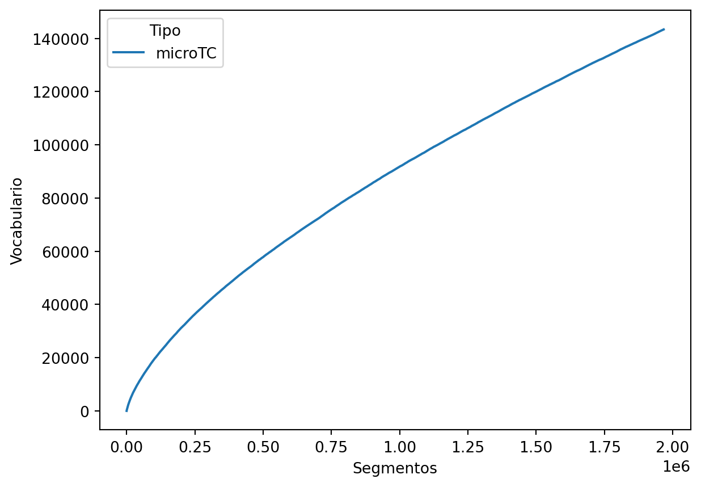
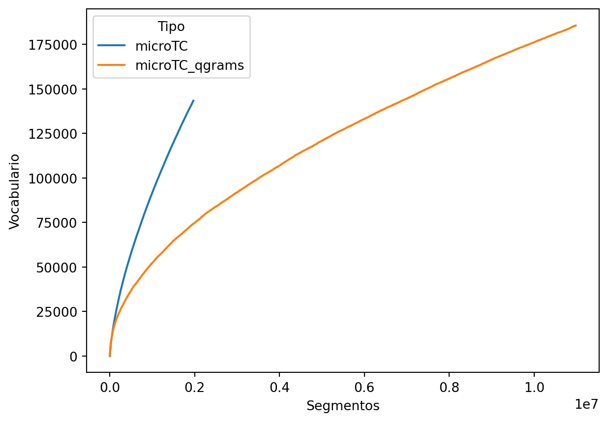
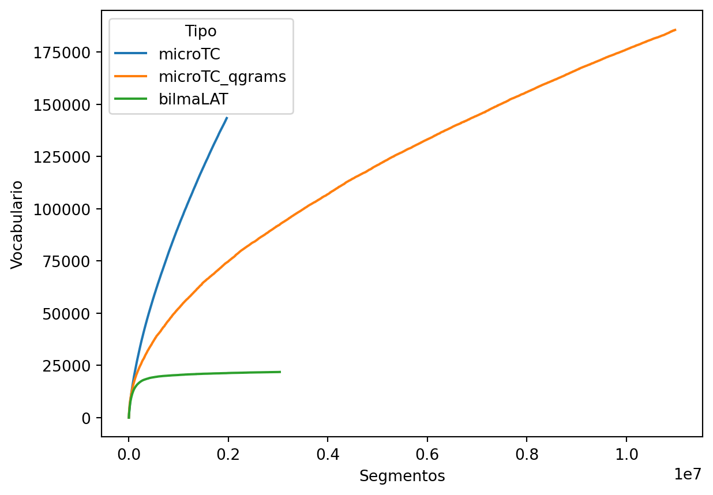

from collections import Counter
import pprint
import unicodedata
import re
import numpy as np
import pandas as pd
import seaborn as sns
from microtc import TextModel
from microtc.textmodel import SKIP_SYMBOLS
from b4msa.textmodel import TextModel
from b4msa.lang_dependency import LangDependency
import spacy
from transformers import AutoTokenizer, PreTrainedTokenizerFast
from tokenizers import Tokenizer, pre_tokenizers, normalizers, AddedToken, Regex
from tokenizers.models import WordPiece
from tokenizers.trainers import WordPieceTrainer
from tokenizers.normalizers import NFD
from tokenizers.processors import TemplateProcessing
from encexp.utils import load_dataset
from pysentimiento.preprocessing import preprocess_tweet
from microtc.params import OPTION_GROUP, OPTION_DELETE,\
OPTION_NONE
from nltk.stem.snowball import SnowballStemmer
pp = pprint.PrettyPrinter(width=60, compact=True).pprint2 Manejando Texto
El objetivo de la unidad es analizar la implementación de diferentes componentes de un sistema de procesamiento de lenguaje natural (PLN), incluyendo la normalización del texto y su segmentación para comprender las etapas comunes a los sistemas de PLN.
Paquetes usados
2.1 Introducción
Se podría suponer que el texto se que se analizará está bien escrito y tiene un formato adecuado para su procesamiento. Desafortunadamente, la realidad es que en la mayoría de aplicaciones el texto que se analiza tiene errores de ortográficos, errores de formato y además no es trivial identificar la unidad mínima de procesamiento que podría ser de manera natural, en el español, las palabras. Por este motivo, esta unidad trata técnicas comunes que se utilizan para normalizar el texto, esta normalización es un proceso previo al desarrollo de los algoritmos de PLN.
La Figura 2.1 esquematiza el procedimiento que se presenta en esta unidad, la idea es que se un texto pasa primeramente a un proceso de normalización (Sección 2.2 y Sección 2.3), para después ser segmentado (ver Sección 2.4) y el resultado es lo que se utiliza para modelar el lenguaje.
Las normalizaciones y segmentaciones descritas en esta unidad se basan principalmente en las utilizadas en los siguientes artículos científicos.
- An automated text categorization framework based on hyperparameter optimization (Tellez et al. (2018))
- A simple approach to multilingual polarity classification in Twitter (Tellez, Miranda-Jiménez, Graff, Moctezuma, Suárez, et al. (2017))
- A case study of Spanish text transformations for twitter sentiment analysis (Tellez, Miranda-Jiménez, Graff, Moctezuma, Siordia, et al. (2017))
- Bag-of-Word approach is not dead: A performance analysis on a myriad of text classification challenges (Graff et al. (2025))
2.2 Normalización de Texto Sintáctica
La descripción de las normalizaciones empieza presentando las que se puede aplicar a nivel de caracteres, sin la necesidad de conocer el significado de las palabras. También se agrupan en este conjunto aquellas transformaciones que se realizan mediante expresiones regulares o su búsqueda en una lista de palabras previamente definidas.
2.2.1 Entidades
La descripción de diferentes técnicas de normalización empieza con el manejo de entidades en el texto. Algunas entidades que se tratarán serán los nombres de usuario, números o URLs mencionados en un texto. Por otro lado están las acciones que se realizarán a las entidades encontradas, estas acciones corresponden a su borrado o remplazo por algún otro toquen.
2.2.1.1 Usuarios
En esta sección se trabajará con los nombres de usuarios que siguen el formato usado por Twitter. En un tuit, los nombres de usuarios son aquellas palabras que inician con el caracter @ y terminan con un espacio o caracter terminal. Las acciones que se realizarán con los nombres de usuario encontrados serán su borrado o reemplazo por una etiqueta en particular.
El procedimiento para encontrar los nombres de usuarios es mediante expresiones regulares, en particular se usa la expresión @\S+, tal y como se muestra en el siguiente ejemplo.
text = 'Hola @xx, @mm te está buscando'
re.sub(r"@\S+", "", text)'Hola te está buscando'La segunda acción es reemplazar cada nombre de usuario por una etiqueta particular, en el siguiente ejemplo se reemplaza por la etiqueta _usr.
text = 'Hola @xx, @mm te está buscando'
re.sub(r"@\S+", "_usr", text)'Hola _usr _usr te está buscando'2.2.1.2 URL
Los ejemplos anteriores se pueden adaptar para manejar URL; solamente es necesario adecuar la expresión regular que identifica una URL. En el siguiente ejemplo se muestra como se pueden borrar las URLs que aparecen en un texto.
text = "puedes verificar que http://google.com esté funcionando"
re.sub(r"https?://\S+", "", text)'puedes verificar que esté funcionando'2.2.1.3 Números
The previous code can be modified to deal with numbers and replace the number found with a shared label such as _num.
text = "acabamos de ganar 10 M"
re.sub(r"\d\d*\.?\d*|\d*\.\d\d*", "_num", text)'acabamos de ganar _num M'2.2.2 Ortografía
El siguiente bloque de normalizaciones agrupa aquellas modificaciones que se realizan a algún componente de tal manera que aunque impacta en su ortografía puede ser utilizado para reducir la dimensión y se ve reflejado en la complejidad del algoritmo.
2.2.2.1 Mayúsculas y Minúsculas
La primera de estas transformaciones es convertir todas los caracteres a minúsculas. Como se puede observar esta transformación hace que el vocabulario se reduzca, por ejemplo, las palabras México o MÉXICO son representados por la palabra méxico. Esta operación se puede realizar con la función lower tal y cómo se muestra a continuación.
text = "México"
text.lower()'méxico'2.2.2.2 Signos de Puntuación
Los signos de puntuación son necesarios para tareas como la generación de textos, pero existen otras aplicaciones donde los signos de puntuación tienen un efecto positivo en el rendimiento del algorithm, este es el caso de tareas de categorización de texto. El efecto que tiene el quitar los signos de puntuación es que el vocabulario se reduce. Los símbolos de puntuación se pueden remover teniendo una lista de los mismos, esta lista de signos de puntuación se encuentra en la variable SKIP_SYMBOLS y el siguiente código muestra un procedimiento para quitarlos.
text = "¡Hola! buenos días:"
output = ""
for x in text:
if x in SKIP_SYMBOLS:
continue
output += x
output'Hola buenos días'2.2.2.3 Símbolos Diacríticos
Continuando con la misma idea de reducir el vocabulario, es común eliminar los símbolos diacríticos en las palabras. Esta transformación también tiene el objetivo de normalizar aquellos textos informales donde los símbolos diacríticos son usado con una menor frecuencia, en particular los acentos en el caso del español. Por ejemplo, es común encontrar la palabra México escrita como Mexico.
El siguiente código muestra un procedimiento para eliminar los símbolos diacríticos.
text = 'México'
output = ""
for x in unicodedata.normalize('NFD', text):
o = ord(x)
if 0x300 <= o and o <= 0x036F:
continue
output += x
output'Mexico'2.3 Normalización Semántica
Las siguientes normalizaciones comparten el objetivo con las normalizaciones presentadas hasta este momento, el cual es la reducción del vocabulario; la diferencia es que las siguientes utilizan el significado o uso de la palabra.
2.3.1 Palabras Comunes
Las palabras comunes (stop words) son palabras utilizadas frecuentemente en el lenguaje, las cuales son necesarias para comunicación, pero no aportan información para discriminar un texto de acuerdo a su significado.
The stop words are the most frequent words used in the language. These words are essential to communicate but are not so much on tasks where the aim is to discriminate texts according to their meaning.
Las palabras vacías se pueden guardar en un diccionario y el proceso de identificación consiste en buscar la existencia de la palabra en el diccionario. Una vez que la palabra analizada se encuentra en el diccionario, se procede a quitarla o cambiarla por un token particular. El proceso de borrado se muestra en el siguiente código.
lang = LangDependency('spanish')
text = '¡Buenos días! El día de hoy tendremos un día cálido.'
output = []
for word in text.split():
if word.lower() in lang.stopwords[len(word)]:
continue
output.append(word)
pp(output)['¡Buenos', 'días!', 'día', 'hoy', 'día', 'cálido.']2.3.2 Lematización y Reducción a la Raíz
La idea de lematización y reducción a la raíz (stemming) es transformar una palabra a su raíz mediante un proceso heurístico o morfológico. Por ejemplo, las palabras jugando o jugaron se transforman a la palabra jugar.
El siguiente código muestra el proceso de reducción a la raíz utilizando la clase SnowballStemmer.
stemmer = SnowballStemmer('spanish')
text = 'Estoy jugando futbol con mis amigos'
output = []
for word in text.split():
w = stemmer.stem(word)
output.append(w)
pp(output)['estoy', 'jug', 'futbol', 'con', 'mis', 'amig']2.4 Segmentación
Una vez que el texto ha sido normalizado es necesario segmentarlo (tokenize) a sus componentes fundamentales, e.g., palabras o gramas de caracteres (q-grams) o de palabras (n-grams). Existen diferentes métodos para segmentar un texto, probablemente una de las más sencillas es asumir que una palabra está limitada entre dos espacios o signos de puntuación. Partiendo de las palabras encontradas se empiezan a generar los gramas de palabras, e.g., bigramas, o los gramas de caracteres si se desea solo generarlos a partir de las palabras.
2.4.1 Gramas de Palabras (n-grams)
El primer método de segmentación revisado es la creación de los gramas de palabras. El primer paso es encontrar las palabras las cuales se pueden encontrar mediante la función split; una vez que las palabras están definidas estás se pueden unir para generar los gramas de palabras del tamaño deseado, tal y como se muestra en el siguiente código.
text = 'Estoy jugando futbol con mis amigos'
words = text.split()
n = 3
n_grams = []
for a in zip(*[words[i:] for i in range(n)]):
n_grams.append("~".join(a))
pp(n_grams)['Estoy~jugando~futbol', 'jugando~futbol~con',
'futbol~con~mis', 'con~mis~amigos']2.4.2 Gramas de Caracteres (q-grams)
La segmentación de gramas de caracteres complementa los gramas de palabras. Los gramas de caracteres están definidos como la subcadena de longitud \(q\). Este tipo de segmentación tiene la característica de que es agnóstica al lenguaje, es decir, se puede aplicar en cualquier idioma; contrastando, los gramas de palabras se pueden aplicar solo a los lenguajes que tienen definido el concepto de palabra, por ejemplo en el idioma chino las palabras no se pueden identificar como se pueden identificar en el español o inglés. La segunda característica importante es que ayuda en el problema de errores ortográficos, siguiendo una perspectiva de similitud aproximada.
El código para realizar los gramas de caracteres es similar a la presentada anteriormente, siendo la diferencia que el ciclo está por los caracteres en lugar de la palabras como se había realizado. El siguiente código muestra una implementación para realizar gramas de caracteres.
text = 'Estoy jugando'
q = 4
q_grams = []
for a in zip(*[text[i:] for i in range(q)]):
q_grams.append("".join(a))
pp(q_grams)['Esto', 'stoy', 'toy ', 'oy j', 'y ju', ' jug', 'juga',
'ugan', 'gand', 'ando']2.5 \(\mu\)TC
Habiendo descrito diferentes tipos de normalización (sintáctica y semántica) y el proceso de segmentación es momento para describir la librería B4MSA (Tellez, Miranda-Jiménez, Graff, Moctezuma, Suárez, et al. (2017)) que implementa estos procedimientos; específicamente, el punto de acceso de estos procedimientos corresponde a la clase TextModel. El método TextModel.text_transformations es el que realiza todos los métodos de normalización (Sección 2.2 y Sección 2.3) y el método TextModel.tokenize es el encargado de realizar la segmentación (Sección 2.4) siguiendo el flujo mostrado en la Figura 2.1.
2.5.1 Normalizaciones
El primer conjunto de parámetros que se describen son los que corresponden a las entidades (Sección 2.2.1). Estos parámetros tiene tres opciones, borrar (OPTION_DELETE), remplazar (OPTION_GROUP) o ignorar. Los nombres de los parámetros son:
- usr_option
- url_option
- num_option
que corresponden al procesamiento de usuarios, URL y números respectivamente. Adicionalmente, TextModel trata los emojis, hashtags y nombres, mediante los siguientes parámetros:
- emo_option
- hashtag_option
- ent_option
Por ejemplo, el siguiente código muestra como se borra el usuario y se reemplaza un hashtag; se puede observar que en la respuesta se cambian todos los espacios por el caracter ~ y se incluye ese mismo al inicio y final del texto.
tm = TextModel(hashtag_option=OPTION_GROUP,
usr_option=OPTION_DELETE)
texto = 'mira @xyz estoy triste. #UnDiaLluvioso'
tm.text_transformations(texto)'~mira~estoy~triste~_htag~'Siguiendo con las transformaciones sintácticas, toca el tiempo a describir aquellas que relacionadas a la ortografía (Sección 2.2.2) las cuales corresponden a la conversión a minúsculas, borrado de signos de puntuación y símbolos diacríticos. Estas normalizaciones se activan con los siguiente parámetros.
- lc
- del_punc
- del_diac
En el siguiente ejemplo se transforman el texto a minúscula y se remueven los signos de puntuación.
tm = TextModel(lc=True,
del_punc=True,
del_diac=False)
texto = 'Hoy está despejado.'
tm.text_transformations(texto)'~hoy~está~despejado~'Las normalizaciones semánticas (Sección 2.3) que se tienen implementadas en la librería corresponden al borrado de palabras comunes y reducción a la raíz; estás se pueden activar con los siguientes parámetros.
- stopwords
- stemming
Por ejemplo, las siguientes instrucciones quitan las palabras comunes y realizan una reducción a la raíz.
tm = TextModel(lang='es',
stopwords=OPTION_DELETE,
stemming=True)
texto = 'el clima es perfecto'
tm.text_transformations(texto)'~clim~perfect~'2.5.2 Segmentación
El paso final es describir el uso de la segmentación. La librería utiliza el parámetro token_list para indicar el tipo de segmentación que se desea realizar. El formato es una lista de número, donde el valor indica el tipo de segmentación. El número \(1\) indica que se realizará una segmentación por palabras, los número positivo corresponden a los gramas de caracteres y los números negativos a los gramas de palabras.
Por ejemplo, utilizando las normalizaciones que se tienen por defecto, el siguiente código segmenta utilizando gramas de caracteres de tamañan \(4.\)
txt = 'buenos días, bienvenidos al curso de Procesamiento de Lenguaje Natural.'
microTC_qgrams = TextModel(token_list=[4])
pp(microTC_qgrams.tokenize(txt))['q:~bue', 'q:buen', 'q:ueno', 'q:enos', 'q:nos~', 'q:os~d',
'q:s~di', 'q:~dia', 'q:dias', 'q:ias~', 'q:as~b', 'q:s~bi',
'q:~bie', 'q:bien', 'q:ienv', 'q:enve', 'q:nven', 'q:veni',
'q:enid', 'q:nido', 'q:idos', 'q:dos~', 'q:os~a', 'q:s~al',
'q:~al~', 'q:al~c', 'q:l~cu', 'q:~cur', 'q:curs', 'q:urso',
'q:rso~', 'q:so~d', 'q:o~de', 'q:~de~', 'q:de~p', 'q:e~pr',
'q:~pro', 'q:proc', 'q:roce', 'q:oces', 'q:cesa', 'q:esam',
'q:sami', 'q:amie', 'q:mien', 'q:ient', 'q:ento', 'q:nto~',
'q:to~d', 'q:o~de', 'q:~de~', 'q:de~l', 'q:e~le', 'q:~len',
'q:leng', 'q:engu', 'q:ngua', 'q:guaj', 'q:uaje', 'q:aje~',
'q:je~n', 'q:e~na', 'q:~nat', 'q:natu', 'q:atur', 'q:tura',
'q:ural', 'q:ral~']para poder identificar cuando se trata de un segmento que corresponde a una palabra o un grama de caracteres, a los últimos se les agrega el prefijo q:. Cabe mencionar que por defecto se remueven los símbolos diacríticos.
El ejemplo anterior, se utiliza para generar un grama de palabras de tamaño \(2.\) Como se ha mencionado los gramas de palabras se especifican con números negativos siendo el valor absoluto el tamaño del grama.
tm = TextModel(token_list=[-2])
pp(tm.tokenize(txt))['buenos~dias', 'dias~bienvenidos', 'bienvenidos~al',
'al~curso', 'curso~de', 'de~procesamiento',
'procesamiento~de', 'de~lenguaje', 'lenguaje~natural']Para completar la explicación, se combinan la segmentación de gramas de caracteres y palabras además de incluir las palabras en la segmentación.
tm = TextModel(token_list=[4, -2, -1])
pp(tm.tokenize(txt))['buenos~dias', 'dias~bienvenidos', 'bienvenidos~al',
'al~curso', 'curso~de', 'de~procesamiento',
'procesamiento~de', 'de~lenguaje', 'lenguaje~natural',
'buenos', 'dias', 'bienvenidos', 'al', 'curso', 'de',
'procesamiento', 'de', 'lenguaje', 'natural', 'q:~bue',
'q:buen', 'q:ueno', 'q:enos', 'q:nos~', 'q:os~d', 'q:s~di',
'q:~dia', 'q:dias', 'q:ias~', 'q:as~b', 'q:s~bi', 'q:~bie',
'q:bien', 'q:ienv', 'q:enve', 'q:nven', 'q:veni', 'q:enid',
'q:nido', 'q:idos', 'q:dos~', 'q:os~a', 'q:s~al', 'q:~al~',
'q:al~c', 'q:l~cu', 'q:~cur', 'q:curs', 'q:urso', 'q:rso~',
'q:so~d', 'q:o~de', 'q:~de~', 'q:de~p', 'q:e~pr', 'q:~pro',
'q:proc', 'q:roce', 'q:oces', 'q:cesa', 'q:esam', 'q:sami',
'q:amie', 'q:mien', 'q:ient', 'q:ento', 'q:nto~', 'q:to~d',
'q:o~de', 'q:~de~', 'q:de~l', 'q:e~le', 'q:~len', 'q:leng',
'q:engu', 'q:ngua', 'q:guaj', 'q:uaje', 'q:aje~', 'q:je~n',
'q:e~na', 'q:~nat', 'q:natu', 'q:atur', 'q:tura', 'q:ural',
'q:ral~']
TipActividad
Ejercicio 2.1 Indique ¿cuántos segmentos genera TextModel al procesar la frase buenos días, bienvenidos al curso de Procesamiento de Lenguaje Natural. cuando se usa una combinación entre palabras, 4-gramas de palabras y bigramas de caracteres?
- 86
- 87
- 88
2.6 spaCy
spaCy es una librería general para el procesamiento de lenguaje natural PLN. El primer paso en cualquier tarea de PLN corresponde a la segmentación, en este apartado se da un ejemplo de como se realiza la segmentación con esta librería.
El proceso de segmentación se inicia cargando el modelo de español en la librería lo cual se hace con la siguiente instrucción.
pln = spacy.load("es_core_news_lg")La variable pln es la instancia que permite manipular los textos en español. Tiene el comportamiento de una función y para usarla solamente es necesario ejecutarla con el texto que se quiere procesar tal y como se indica en la siguiente instrucción.
doc = pln(txt)El texto es procesado es organizado en una instancia de la clase Doc la cual es iterable. Los elementos corresponden a las palabras de la oración, así como a otros componentes, como los signos de puntuación. Además la librería proporciona información sintáctica y semántica de cada palabra, en el siguiente ejemplo se muestra las partes de la oración.
pp([(w.text, w.pos_) for w in doc])[('buenos', 'ADJ'), ('días', 'NOUN'), (',', 'PUNCT'),
('bienvenidos', 'ADJ'), ('al', 'ADP'), ('curso', 'NOUN'),
('de', 'ADP'), ('Procesamiento', 'PROPN'), ('de', 'ADP'),
('Lenguaje', 'PROPN'), ('Natural', 'PROPN'),
('.', 'PUNCT')]2.7 Modelo Latinoamericano
Los procedimientos anteriores segmentan un texto utilizando un conjunto de reglas y pueden generar un número infinito de palabras. En el otro extremo de los segmentadores se encuentran aquellos que utilizan un vocabulario fijo y que se basan en representar cualquier texto utilizando ese vocabulario. Por supuesto el vocabulario está compuesto por palabras, caracteres, sufijos, infijos y prefijos. Uno de estos algoritmos es el Byte Pair Encoding (Sennrich et al. (2016)).
En la siguiente instrucción utilizamos el segmentador implementado en el modelo bilmaLAT.
bilmaLAT = AutoTokenizer.from_pretrained('guillermoruiz/bilmaLAT')La variable bilmaLAT funciona como una función que recibe el texto y regresa el texto segmentado y una máscara de atención que se verá en una unidad posterior.
El resultado de la siguiente instrucción indica en el campo input_ids el texto segmentado aunque se encuentra codificado, es decir, el valor 12658 corresponde a la palabra buenos. Es importante notar que cada valor en el arreglo corresponde a una secuencia de caracteres, esta secuencia en algunas ocasiones representan una palabra y en otras solamente una parte de la palabra. Por ejemplo los valores 26563 y 5892 corresponden a la palabra bienvenidos.
code = bilmaLAT(txt)
pp(code){'attention_mask': [1, 1, 1, 1, 1, 1, 1, 1, 1, 1, 1, 1, 1,
1, 1, 1, 1, 1],
'input_ids': [2, 12658, 11468, 16, 26563, 5892, 11016,
15386, 10947, 11946, 16724, 11797, 10947,
20612, 20934, 29851, 18, 3]}El método bilmaLAT.decode decodifica el texto y como se muestra en el resultado de la siguiente instrucción, se le añadió [CLS] al inicio de la frase y [SEP] al final. Este comportamiento es normal en este tipo de modelado y quedará claro en las siguiente unidades.
bilmaLAT.decode(code['input_ids'])'[CLS] buenos días, bienvenidos al curso de Procesamiento de Lenguaje Natural. [SEP]'
TipActividad
Ejercicio 2.2 Indique ¿cuántos diferentes input_ids se utilizan al segmentar la oración buenox días utilizando bilmaLAT?
- 5
- 2
- 3
- 4
2.8 RoBERTuito
Un modelo similar a bilmaLAT que fue entrenado con otro conjunto de datos y con algunas características particulares es RoBERTuito descrito en Pérez et al. (2022). Este modelo se puede obtener con la siguiente instrucción.
robertuito = AutoTokenizer.from_pretrained('pysentimiento/robertuito-base-cased')Los autores de RoBERTuito mencionan que antes de pasar el texto al segmentador se deben de realizar un pre-procesamiento con la función preprocess_tweet tal y como se muetra en la siguiente instrucción.
El texto segmentado se representa en la misma estructura de datos que la utilizada por bilmaLAT.
code = robertuito(preprocess_tweet(txt))
pp(code){'attention_mask': [1, 1, 1, 1, 1, 1, 1, 1, 1, 1, 1, 1, 1,
1, 1, 1, 1],
'input_ids': [0, 2728, 5273, 20875, 502, 4999, 411, 1735,
865, 6592, 411, 11380, 1159, 776, 27759, 18,
2]}La secuencia se decodifica utilizando el método robertuito.decode como se observa en la siguiente instrucción. En el salida de la celda se observa como al inicio de la frase se coloca la etiqueta <s> y al final la etiqueta </s>.
robertuito.decode(code['input_ids'])'<s> buenos días, bienvenidos al curso de Procesamiento de Lenguaje Natural.</s>'2.9 Crecimiento del vocabulario
En este apartado se utilizan diferentes segmentadores de texto para medir el crecimiento del vocabulario con respecto al número de palabras leidas.
Se utiliza un conjunto de datos que se obtiene con la función load_dataset utilizando los parámetros que se muestran en la siguiente instrucción.
dataset = load_dataset(lang='es', dataset='dev')El crecimiento del vocabulario se mide utilizando la función dinamica_vocabulario la cual recibe una función (argumento tokenizer) que segmenta el texto y esta función la aplica a cada elemento del conjunto de datos (variable dataset). En cada paso del ciclo se actualiza el vocabulario (variable voc) y se guarda la cantidad de palabras leidas y el tamaño del vocabulario en la lista data.
def dinamica_vocabulario(tokenizer):
voc = set()
data = []
prev = 0
for ele in dataset:
words = tokenizer(ele)
voc.update(words)
prev += len(words)
data.append([prev, len(voc)])
return data- 1
- Vocabulario
- 2
- Cantidad de palabras leídas y tamaño del vocabulario
- 3
- Cantidad de palabras leídas hasta el momento
- 4
- Segmentación del texto
- 5
- Actualización del vocabulario
- 6
- Actualización de la cantidad de palabras leídas
El primer sistema de segmentación analizado es microTC, tal y como se muestra en la primer línea de las siguientes instrucciones. La segunda y tercera línea tienen el objetivo de guardar la información en un marco de datos.
microTC = TextModel(token_list=[-1])
data = dinamica_vocabulario(microTC.tokenize)
df = pd.DataFrame(data, columns=['Segmentos', 'Vocabulario'])
df['Tipo'] = 'microTC'La dinámica del crecimiento de vocabulario con respecto a la cantidad de palabras procesadas se puede observar en la salida de la celda siguiente.
sns.lineplot(data=df, x='Segmentos', y='Vocabulario', hue='Tipo')
El segundo sistema analizado es microTC_qgrams que corresponde al segmentador que procesa gramas de caracteres de tamañano 4.
data = dinamica_vocabulario(microTC_qgrams.tokenize)
_ = pd.DataFrame(data, columns=['Segmentos', 'Vocabulario'])
_['Tipo'] = 'microTC_qgrams'
df = pd.concat([df, _])
sns.lineplot(data=df, x='Segmentos', y='Vocabulario', hue='Tipo')
La figura anterior muestra el comportamiento del vocabulario con respecto a palabras y gramas de caracteres. Los gramas de caracteres generan un vocabulario mayor en el conjunto analizado, pero también se puede observar que el vocabulario es finito y va a estabilizarse en algún momento. Esto se puede observar fácilmente en el caso límite, es decir, cuando el tamaño del grama es 1, en este caso el vocabulario corresponde a la codificación utilizada para representar cada caracter.
El siguiente segmentador a analizar es bilmaLAT. En este caso se requiere una función auxiliar bilmaLAT_tok que solamente extrae el campo texto del diccionario utilizado para guardar cada elemento del conjunto de datos utilizado.
El crecimiento del vocabulario de estos tres modelos se muestra en la salida de la siguiente celda. Se puede observar como el vocabulario de bilmaLAT se estabiliza, esto es porque este modelo tiene un vocabulario fijo y lo único que se observa es la cantidad de texto que se require procesar para cubrir ese vocabulario.
def bilmaLAT_tok(data):
return bilmaLAT(data['text'])['input_ids']
data = dinamica_vocabulario(bilmaLAT_tok)
_ = pd.DataFrame(data, columns=['Segmentos', 'Vocabulario'])
_['Tipo'] = 'bilmaLAT'
df = pd.concat([df, _])
sns.lineplot(data=df, x='Segmentos', y='Vocabulario', hue='Tipo')
TipActividad
Ejercicio 2.3 Considerando Herdan’s Law (\(\mid V \mid)=kN^{\beta}\) (donde \(k\) y \(\beta\) son parámetros, \(\mid V \mid\) es el vocabulario y \(N\) es los segmentos) seleccione el sistema con un mayor crecimiento (i.e., \(\beta\)):
microTCmicroTC_qgramsbilmaLAT
robertuito
Ejercicio 2.4 Observe que el conjunto de datos obtenido mediante la función load_dataset(lang='es') tiene 912681 elementos, cada uno de ellos tiene la llave country que identifica el origen de ese texto. Realizar los cambios necesarios para medir el crecimiento del vocabulario utilizando microTC para Argentina (ar) España (es) y México (mx). ¿Cuál es el país que tiene el mayor crecimiento de vocabulario?
- Argentina
- España
- México
2.10 Entrenando un segmentador
Habiendo utilizado el segmentador del modelo bilmaLAT (Sección 2.7) es momento de describir los pasos para entrenar un segmentador de este tipo. Una de las primeras decisiones es definir las palabras especiales, que son utilizadas para identificar algunas partes del texto. Por ejemplo, es comun utilizar una marca para identificar el inicio de la oración y su final, así como palabras para que todos los textos tengan la misma cantidad de segmentos. En el siguiente código se define estas palabras en la variable special_tokens, el primer marcador [UNK] se utiliza para identificar los segmentos desconocidos, [CLS] es utilizado en el inicio de la oración, [SEP] se utiliza para identificar el final de la oración y para separar dos oraciones relacionadas, [PAD] se utiliza para completar un texto y que este tenga la cantidad de segmentos requeridos, [MASK] es la palabra que se utilizar para ocultar en segmento en la oración, finalemente URL y USR son etiquetas que se usan para sustituir las URLs y los nombres de usuario respectivamente.
special_tokens = [
AddedToken(token, single_word=True,
normalized=False, special=True)
for token in ['[UNK]', '[CLS]', '[SEP]',
'[PAD]', '[MASK]', 'URL', 'USR']
]Habiendo definido las palabras especiales, es momento de inicializar la clase que se usa para segmentar, esta clase es Tokenizer, la cual requiere el método que encuentra en los segmentos, en esta ocasión se utiliza el método WordPiece (Song et al. (2021)) que requiere solamente conocer cual es el identificador de los segmentos desconocidos (ver primera linea). En la segunda linea se añaden los identificadores especiales al segmentador.
tokenizer = Tokenizer(
WordPiece(unk_token=special_tokens[0].content)
)
tokenizer.add_special_tokens(special_tokens)El proceso de segmentar sigue el procedimiento descrito en Figura 2.1, donde el primer paso es normalizar el texto. En el siguiente código se definen el proceso de normalización que se utilizara. El primer proceso corresponde a la normalización de unicode implementada en la clase NFD. La segunda y tercera normalización corresponde a la sustitución de URL por el identificador URL y el cambio de cualquier usuario por la etiqueta USR. La última linea añade estas normalizaciones a la instancia tokenizer.
norm = []
norm.append(NFD())
rep = normalizers.Replace(Regex(r'https?://\S+|\b_url\b'),
'URL')
norm.append(rep)
rep = normalizers.Replace(Regex(r'@\S+|\b_usr\b'), 'USR')
norm.append(rep)
tokenizer.normalizer = normalizers.Sequence(norm)- 1
- Normalización de unicode
- 2
-
Reemplazo de URLs por la etiqueta
URL - 3
-
Reemplazo de nombres de usuario por la etiqueta
USR - 4
- Secuencia de normalizaciones
El siguiente paso es definir el procedimiento para identificar los segmentos, en este caso se utiliza el espacio, de tal manera que cada segmento corresponde al concepto de palabra, esto se observa en la siguiente instrucción.
tokenizer.pre_tokenizer = pre_tokenizers.Whitespace()El último paso corresponde a incluir un procedimiento que agregue indicadores adicionales al texto segmentado, en este ejemplo se agrega una plantilla para cuando se segmenta un texto, en la cual se añade el identificador [CLS] al inicio y [SEP] al final. En el caso de segmentar dos textos, este par es separado con la etiqueta [SEP].
post_tok = TemplateProcessing(
single="[CLS] $A [SEP]",
pair="[CLS] $A [SEP] $B:1 [SEP]:1",
special_tokens=[
("[CLS]", tokenizer.token_to_id("[CLS]")),
("[SEP]", tokenizer.token_to_id("[SEP]")),
("[PAD]", tokenizer.token_to_id("[PAD]")),
],
)
tokenizer.post_processor = post_tok- 1
- Plantilla para un texto
- 2
- Plantilla para dos textos
- 3
- Palabras especiales
Después de definir el procedimiento de segmentación, se inicia el proceso de entrenamiento. Este proceso se realiza con la clase WordPieceTrainer, la cual recibe como parámetros el tamaño del vocabulario y los segmentos especiales.
vocab_size = 2**15
trainer = WordPieceTrainer(vocab_size=vocab_size,
special_tokens=special_tokens)- 1
- Tamaño del vocabulario
- 2
- Clase para entrenar el segmentador.
El último paso es entrenar el segmentador con el método train_from_iterator el cual recibe los textos donde se estima el vocabulario y la clase que encuentra este vocabulario, i.e., variable trainer.
tokenizer.train_from_iterator(map(lambda x: x['text'],
dataset),
trainer=trainer,
length=len(dataset))- 1
- Conjunto de entrenamiento
- 2
- Clase utilizada para entrenar el segmentador
El siguiente fragmento utiliza el segmentador (i.e., tokenizer) para codificar el texto que se encuentra en la variable txt mediante el método encode.
pp(tokenizer.encode(txt).ids)[1, 5478, 4185, 18, 29704, 3716, 9712, 3661, 4567, 9821,
4430, 3661, 11614, 14404, 29002, 20, 2]
TipActividad
Ejercicio 2.5 Indique ¿cuál es el identificador de la palabra amor en el segmentador que se encuentra en la variable tokenizer?
- 4715
- 4258
- 10643
Se observar que el método para codificar el texto es diferente entre tokenizer y bilmaLAT, esto es porque tokenizer es un segmentador general y bilmaLAT corresponde a un segmentador que es utilizado en el contexto de la librería transformers. Para poder utilizar tokenizer dentro de la librería transformers es necesario crear una instancia de PreTrainedTokenizerFast lo cual se puede realizar con la siguiente instrucción.
tokenizer_backend = PreTrainedTokenizerFast(
tokenizer_object=tokenizer,
model_max_length=512,
unk_token=special_tokens[0],
cls_token=special_tokens[1],
eos_token=special_tokens[2],
pad_token=special_tokens[3],
mask_token=special_tokens[4]
)- 1
- Segmentador
- 2
- Tamaño máximo del texto segmentado
El siguiente fragmento codifica y decodifica el texto que se encuentra en la variable txt, se observa como la palabra Procesamiento es codificada en tres segmentos.
code = tokenizer_backend(txt)
pp(tokenizer_backend.decode(code))('[CLS] buenos días , bienvenidos al curso de Pro ##cesa '
'##miento de Len ##guaje Natural . [SEP]')
TipActividad
Ejercicio 2.6 Indicar ¿cuál es la(s) palabra(s) codificadas de forma diferente entre bilmaLAT y tokenizer_backend al segmentar el texto en la variable txt?
- bienvenidos, Procesamiento y Lenguaje
- bienvenidos
- Procesamiento
- Lenguaje